Vectores en el espacio
Vectores en el espacio
Un sistema de coordenadas tridimensional se construye trazando un eje Z, perpendicular en el origen de coordenadas a los ejes X e Y.
Cada punto viene determinado por tres coordenadas P(x, y, z).
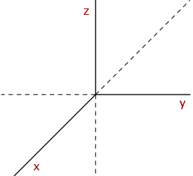
Los ejes de coordenadas determinan tres planos coordenados: XY, XZ e YZ. Estos planos coordenados dividen al espacio en ocho regiones llamadas octantes, en el primer octante las tres coordenadas son positivas.
Vector en el espacio
Un vector en el espacio es cualquier segmento orientado que tiene su origen en un punto y su extremo en el otro.
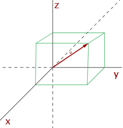
Componentes de un vector en el espacio
Si las coordenadas de A y B son: A(x1, y1, z1) y B(x2, y2, z2) Las coordenadas o componentes del vector 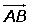 son las coordenadas del extremo menos las coordenadas del origen.
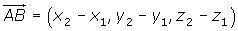
Determinar la componentes de los vectores que se pueden trazar en el triángulo de vértices A(−3, 4, 0), B(3, 6, 3) y C(−1, 2, 1).
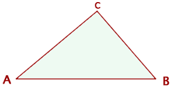
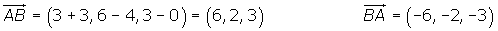
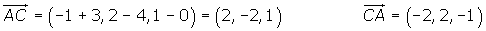
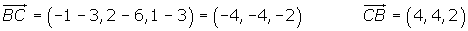
Módulo de un vector
El módulo de un vector es la longitud del segmento orientado que lo define.
El módulo de un vector es un número siempre positivo y solamente el vector nulo tiene módulo cero.
Cálculo del módulo conociendo sus componentes
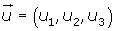
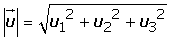
Dados los vectores 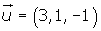y 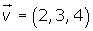, hallar los módulos de  y
y  ·
·
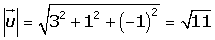
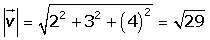
Cálculo del módulo conociendo las coordenadas de los puntos
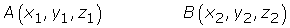
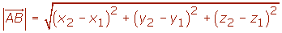
Distancia entre dos puntos
La distancia entre dos puntos es igual al módulo del vector que tiene de extremos dichos puntos.

Hallar la distancia entre los puntos A(1, 2, 3) y B(−1, 2, 0).
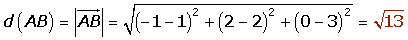
Vector unitario
Un vector unitario tiene de módulo la unidad.
La normalización de un vector consiste en asociarle otro vector unitario, de la misma dirección y sentido que el vector dado, dividiendo cada componente del vector por su módulo.